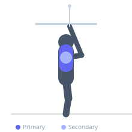

Exercise guide / Straight-Arm Cable Pulldown — Straight Bar
Straight-Arm Cable Pulldown — Straight Bar
The straight-arm pulldown with a straight bar is performed identically to the rope version but with both hands fixed to a rigid bar, keeping the hands in a pronated position throughout. The fixed grip limits the ability to externally rotate the hands at the bottom compared to a rope, but allows for heavier loads and a more consistent pulling path. It is a reliable lat isolation finisher.
Primary muscles
latissimus dorsi
Secondary muscles
teres major
deltoid posterior
Stabilizers
triceps long head
transverse abdominis
Equipment
Cable Machine (High Pulley)


Starting position
- Attach a straight bar to a high-pulley cable. Stand facing the cable, hinge slightly at the hips, and grip the bar with an overhand grip, arms extended toward the cable.
Setup
- Position body 2-3 feet from the cable stack. Slight forward lean increases lat engagement at the top.
Steps
- Step 1: Stand with arms extended toward the cable at approximately head height, overhand grip on bar.
- Step 2: Keeping the arms straight (soft elbow), initiate the pull by contracting the lats.
- Step 3: Drive the bar in a downward arc, keeping it close to the body.
- Step 4: Finish with the bar pressed against the thighs and lats maximally contracted.
- Step 5: Slowly return to start against cable resistance.
Coaching cues
- Arms stay straight
- Think: lats are pulling, not arms
- Full extension at the top before every rep
Breathing
- Exhale on pull, inhale on return.
Range of motion
- Arms extended to roughly head height at the start, bar pressed to thighs at the finish.
Tempo
- 2-1-3-0
Common mistakes
- Bending the elbows and converting to a pulldown
- Swinging the torso to generate momentum
- Not fully straightening the arms at the top
Safety
- Light isolation load only — do not load this movement heavily
- Keep soft bend at elbow to protect the joint
Training
- hypertrophy: 12–15 reps
- endurance: 15–20 reps
- hypertrophy: 3–4 sets
- endurance: 2–3 sets
- Rest: {'hypertrophy': 75, 'endurance': 45}